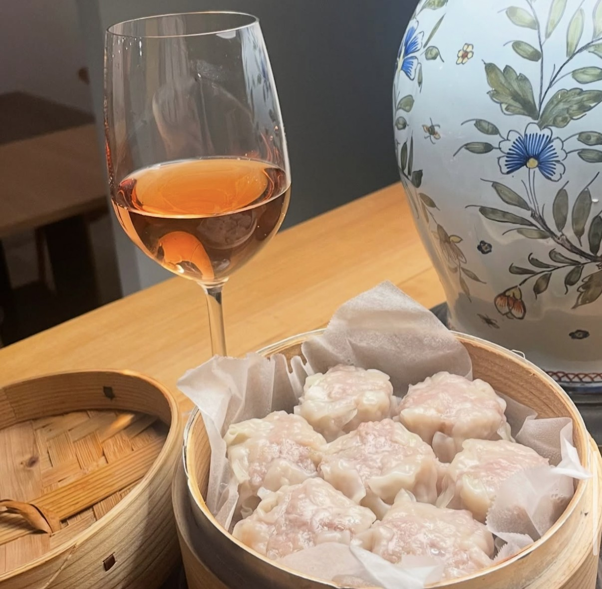
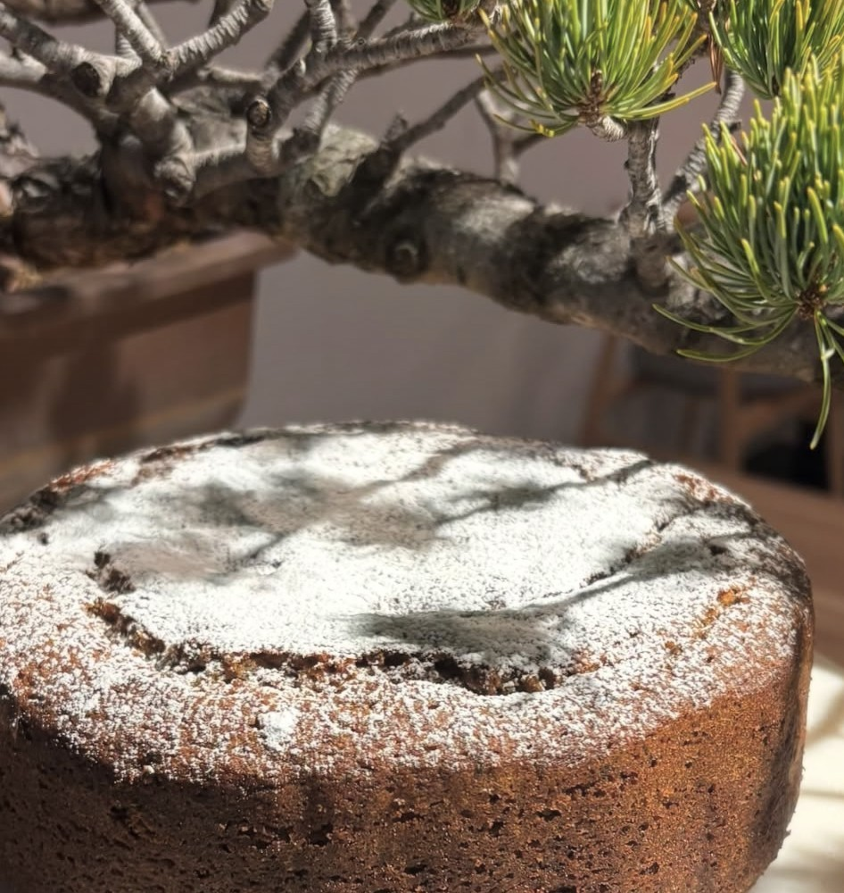

KAMI-JUJO WINE & BISTRO
オーガニック・無添加ワインと手作りイタリアン。ジャズが流れる、14席だけのくつろぎ空間。
CONCEPT
身体にやさしいオーガニック・無添加ワインを中心にセレクト。定期的にワイン試飲会も開催しています。
ミートソースパスタやアヒージョ、アクアパッツァなど、一皿ずつ丁寧に手作り。メニューは定期的に変わります。
カウンター2席・テーブル12席の小さなお店。ジャズの流れる落ち着いた雰囲気で、おひとり様もカップルもごゆっくり。
GALLERY
カウンター2席・テーブル12席の全14席。おひとりでもグループでもお楽しみいただけます。


※「店内風景」の写真は準備中です。images フォルダに写真を追加すると自動的に反映されます。
INFO
お電話、またはInstagramのDMでも承っております。お気軽にお問い合わせください。